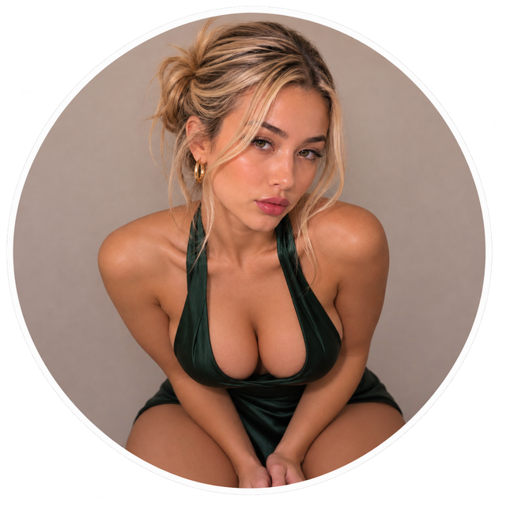

Aiko Vixen
AI generirani modelCome talk to me, baby 💋
Dobrodošli! Ovdje pronađi sve moje profile i najnoviji sadržaj. Prati me i javi se.

Come talk to me, baby 💋
Dobrodošli! Ovdje pronađi sve moje profile i najnoviji sadržaj. Prati me i javi se.